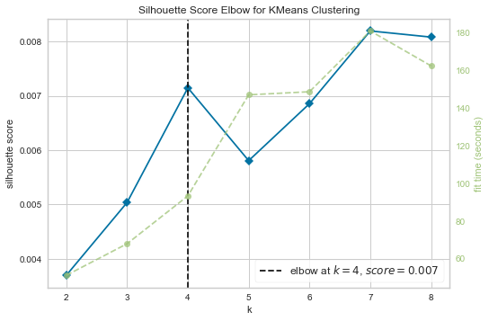

TFIDF Values
Contents
import re,string
from nltk.corpus import stopwords
from nltk.stem import PorterStemmer
from sklearn.feature_extraction.text import TfidfVectorizer
from sklearn.cluster import KMeans
from sklearn.metrics.pairwise import cosine_similarity
from sklearn.manifold import MDS
from sklearn.preprocessing import LabelEncoder, OneHotEncoder
from sklearn.ensemble import RandomForestClassifier
from sklearn.metrics import roc_auc_score, accuracy_score, confusion_matrix
from sklearn.model_selection import cross_val_score, StratifiedKFold
from sklearn.tree import DecisionTreeClassifier
import matplotlib.pyplot as plt
from sklearn.model_selection import train_test_split, KFold
import pandas as pd
from gensim.models import Word2Vec,LdaMulticore, TfidfModel
from gensim import corpora
from gensim.models.doc2vec import Doc2Vec, TaggedDocument
import numpy as np
import multiprocessing
import importlib
import NLPPrep
from NLPPrep import clean_doc, One_Hot, newsloader
---------------------------------------------------------------------------
ModuleNotFoundError Traceback (most recent call last)
Input In [1], in <cell line: 2>()
1 import re,string
----> 2 from nltk.corpus import stopwords
3 from nltk.stem import PorterStemmer
5 from sklearn.feature_extraction.text import TfidfVectorizer
ModuleNotFoundError: No module named 'nltk'
importlib.reload(NLPPrep)
<module 'NLPPrep' from 'D:\\OneDrive - Northwestern University\\453 NLP\\nlpnetworkanalysis\\NLPPrep.py'>
news = newsloader(records = ['2020-1.csv', '2020-2.csv'])
news[:5]
Total files: 2
Total records: 3735
| headline | date | doc_type | type_of_material | snippet | source | news_desk | section_name | keywords | |
|---|---|---|---|---|---|---|---|---|---|
| 0 | ‘Battling a Demon’: Drifter Sought Help Before... | 2020-01-01 | article | News | The gunman who shot two parishioners at the We... | The New York Times | National | U.S. | ['Churches (Buildings)', 'Murders, Attempted M... |
| 1 | F.D.A. Plans to Ban Most E-Cigarette Flavors b... | 2020-01-01 | article | News | The tobacco and vaping industries and conserva... | The New York Times | Science | Health | ['E-Cigarettes', 'Recalls and Bans of Products... |
| 2 | Hong Kong Protesters Return to Streets as New ... | 2020-01-01 | article | News | Weeks of relative calm ended on Wednesday, as ... | The New York Times | Foreign | World | ['Demonstrations, Protests and Riots', 'Hong K... |
| 3 | Kevin Spacey Accuser’s Estate Drops Sexual Ass... | 2020-01-01 | article | News | A Los Angeles County massage therapist, who di... | The New York Times | Express | U.S. | ['Sexual Harassment', 'Suits and Litigation (C... |
| 4 | Dizzying Day for Trump Caps a Year Full of Them | 2020-01-01 | article | News | The president monitored a Middle East crisis f... | The New York Times | Washington | U.S. | ['United States International Relations', 'Uni... |
Combine the headline, keywords, and snippet into a single cell
news[['headline', 'snippet', 'keywords']][:5]
| headline | snippet | keywords | |
|---|---|---|---|
| 0 | ‘Battling a Demon’: Drifter Sought Help Before... | The gunman who shot two parishioners at the We... | ['Churches (Buildings)', 'Murders, Attempted M... |
| 1 | F.D.A. Plans to Ban Most E-Cigarette Flavors b... | The tobacco and vaping industries and conserva... | ['E-Cigarettes', 'Recalls and Bans of Products... |
| 2 | Hong Kong Protesters Return to Streets as New ... | Weeks of relative calm ended on Wednesday, as ... | ['Demonstrations, Protests and Riots', 'Hong K... |
| 3 | Kevin Spacey Accuser’s Estate Drops Sexual Ass... | A Los Angeles County massage therapist, who di... | ['Sexual Harassment', 'Suits and Litigation (C... |
| 4 | Dizzying Day for Trump Caps a Year Full of Them | The president monitored a Middle East crisis f... | ['United States International Relations', 'Uni... |
news.to_csv('samples.csv')
len(news)
3735
def Num_na(df):
print (f"Total NA in headline: {sum(df['headline'].isna())}")
print (f"Total NA in Snippet: {sum(df['snippet'].isna())}")
print (f"Total NA in Keywords: {sum(df['keywords'].isna())}")
Num_na(news)
Total NA in headline: 0
Total NA in Snippet: 10
Total NA in Keywords: 0
news["headline"] = news["headline"].fillna(" ")
news["snippet"] = news["snippet"].fillna(" ")
Num_na(news)
Total NA in headline: 0
Total NA in Snippet: 0
Total NA in Keywords: 0
news['articles'] = news['headline']+" "+news['snippet'] + " " + news['keywords']
#pd.DataFrame(news['articles'][3])
news['articles'][3]
"Kevin Spacey Accuser’s Estate Drops Sexual Assault Lawsuit A Los Angeles County massage therapist, who died in September, had accused Mr. Spacey of groping him and making improper advances during a 2016 massage. ['Sexual Harassment', 'Suits and Litigation (Civil)', 'Movies', '#MeToo Movement', 'Television', 'ACTORS AND ACTRESSES', 'Massage', 'Sex Crimes', 'Academy Awards (Oscars)', 'Golden Globes (Awards)', 'Tony Awards (Theater Awards)']"
titles = []
articles = []
titles = news['headline']
len(titles)
47078
articles = news['articles'].tolist()
print (len(articles))
articles[0]
47078
"‘Battling a Demon’: Drifter Sought Help Before Texas Church Shooting The gunman who shot two parishioners at the West Freeway Church of Christ had come earlier looking for food and money, church leaders said. ['Churches (Buildings)', 'Murders, Attempted Murders and Homicides']"
processed_text = []
articles[4]
"Dizzying Day for Trump Caps a Year Full of Them The president monitored a Middle East crisis from his golf club, threatened Iran and implored reporters to be “honorable” in 2020. ['United States International Relations', 'United States Politics and Government', 'Trump-Ukraine Whistle-blower Complaint and Impeachment Inquiry']"
for i in articles:
text = clean_doc(i)
processed_text.append(text)
print (len(processed_text))
47078
final_processed_text = []
len(final_processed_text)
0
len(news)
47078
for i in processed_text:
if bool(i) == False:
i = "error"
temp_DSI = i[0]
for j in range(1, len(i)):
temp_DSI = temp_DSI+' '+i[j]
final_processed_text.append(temp_DSI)
len(final_processed_text)
47078
final_processed_text[:5]
['drifter sought texas church shooting gunman parishioners freeway church christ earlier looking money church leaders churches buildings murders attempted murders homicides',
'plans ecigarette flavors menthol tobacco vaping industries conservative allies intensively lobbied popular flavored ecigarettes ecigarettes recalls products menthol nicotine teenagers adolescence regulation deregulation industry smoking tobacco lobbying lobbyists united states politics government yourfeedhealthcare',
'protesters return streets begins weeks relative ended wednesday people marched large numbers police deployed pepper spray demonstrations protests riots protests',
'kevin spacey estate drops sexual assault lawsuit angeles county massage therapist september accused spacey groping making improper advances massage sexual harassment suits litigation civil movies metoo movement television actors actresses massage crimes academy awards oscars golden globes awards awards theater awards',
'dizzying trump president monitored middle crisis threatened implored reporters united states international relations united states politics government trumpukraine whistleblower complaint impeachment inquiry']
TFIDF Values¶
Tfidf=TfidfVectorizer(
sublinear_tf = True,
min_df = 5,
ngram_range=(1,2),
stop_words = 'english',
strip_accents= 'unicode',
dtype=np.float32
)
TFIDF_matrix = Tfidf.fit_transform(final_processed_text)
matrix = pd.DataFrame(TFIDF_matrix.toarray(),
columns = Tfidf.get_feature_names_out(),
index = titles
)
average_TFIDF = {}
for i in matrix.columns:
average_TFIDF[i] = np.mean(matrix[i])
average_TFIDF_DF=pd.DataFrame(average_TFIDF,index=[0]).transpose()
average_TFIDF_DF.columns=['TFIDF']
Q1=np.percentile(average_TFIDF_DF, 25)
Q3=np.percentile(average_TFIDF_DF, 75)
IQR = Q3 - Q1
outlier=Q3+(1.5*IQR)
average_TFIDF_DF.sort_values(by="TFIDF", ascending=False).to_csv("TFIDF.csv")
documents = [TaggedDocument(doc, [i]) for i, doc in enumerate(final_processed_text)]
cores = multiprocessing.cpu_count()
print (f'Total Cores: {cores}')
model = Doc2Vec(documents,
vector_size = 100,
window = 2,
min_count = 2,
workers = cores)
Total Cores: 8
doc2vec_df=pd.DataFrame()
for i in range(0,len(processed_text)):
vector=pd.DataFrame(model.infer_vector(processed_text[i])).transpose()
doc2vec_df=pd.concat([doc2vec_df,vector], axis=0)
doc2vec_df=doc2vec_df.reset_index()
doc_titles={'title': titles}
t=pd.DataFrame(doc_titles)
doc2vec_df=pd.concat([doc2vec_df,t], axis=1)
doc2vec_df=doc2vec_df.drop('index', axis=1)
model_w2v = Word2Vec(processed_text,
vector_size = 100,
window = 5,
min_count = 1,
workers = cores)
#join all processed DSI words into single list
processed_text_w2v=[]
for i in processed_text:
for k in i:
processed_text_w2v.append(k)
#obtian all the unique words from DSI
w2v_words=list(set(processed_text_w2v))
#can also use the get_feature_names() from TFIDF to get the list of words
#w2v_words=Tfidf.get_feature_names()
#empty dictionary to store words with vectors
w2v_vectors={}
#for loop to obtain weights for each word
for i in w2v_words:
temp_vec=model_w2v.wv[i]
w2v_vectors[i]=temp_vec
#create a final dataframe to view word vectors
w2v_df=pd.DataFrame(w2v_vectors).transpose()
#the following section runs applies the k-means algorithm on the TFIDF matrix.
ELbows¶
from sklearn.cluster import KMeans
from sklearn.datasets import make_blobs
from yellowbrick.cluster import KElbowVisualizer
from scipy.sparse import csr_matrix
from sklearn.datasets import make_blobs
from sklearn.cluster import KMeans
from sklearn.metrics import silhouette_samples, silhouette_score
import matplotlib.pyplot as plt
import matplotlib.cm as cm
import numpy as np
matrix = TFIDF_matrix
model = KMeans()
visualizer = KElbowVisualizer(model,
k = (2, 9),
metric = 'silhouette',
timings = True
)
visualizer.fit(matrix)
visualizer.show()

<AxesSubplot:title={'center':'Silhouette Score Elbow for KMeans Clustering'}, xlabel='k', ylabel='silhouette score'>
Backup¶
def elbow_method(matrix, lower, upper, seed=None):
# Plot the distortions for each potential value of k
distortions = []
K = range(lower,upper)
for k in K:
model = KMeans(k, random_state=seed)
model.fit(matrix)
distortions.append(model.inertia_)
plt.figure(figsize=(16,8))
plt.plot(K, distortions, 'xb-')
plt.xlabel('k')
plt.ylabel('Distortion')
plt.title('The Elbow Method with optimal k')
return plt.show()
elbow_method(TFIDF_matrix, 3, 10, seed=6)
from sklearn.metrics import silhouette_samples, silhouette_score
from kneed import KneeLocator
#import matplotlib.pyplot as plt
#import matplotlib.cm as cm
#import numpy as np
list(range(2, 5))
import random
import matplotlib.patches as mpatches
from varname import nameof
random.randrange(10)
from kneed import KneeLocator, DataGenerator as dg
x, y = dg.convex_decreasing()
kl = KneeLocator(x, y, curve="convex", direction="decreasing")
kl.plot_knee()
import random
def elbow_method(matrix, lower, upper, seed=None, knee=True):
distortions = []
silhouettes = []
# Set Seed
if not seed:
seed = random.randrange(10000000)
print (f'Seed: {seed}')
K = range(lower,upper)
for k in K:
model = KMeans(k, random_state=seed)
labels = model.fit_predict(matrix)
silhouette_avg = silhouette_score(matrix, labels)
silhouettes.append(silhouette_avg)
distortions.append(model.inertia_)
def bestk_plot(axis, x, y, color, draw_knee=True, curve=None, direction=None, twinx=None):
if twinx:
ax = axis.twinx()
else:
ax = axis
ax.set_xlabel(argname('x'))
ax.set_ylabel(argname('y'), color=color)
ax.plot(x, y, color=color, label=argname('y'))
ax.set_yticks(np.linspace(axis.get_ybound()[0], axis.get_ybound()[1],5))
ax.tick_params(axis='y', labelcolor=color)
if draw_knee:
# https://kneed.readthedocs.io/en/stable/parameters.html
kneedle = KneeLocator(
x = x,
y = y,
curve = curve,
direction = direction,
online = True,
interp_method = "interp1d", #Valid arguments are “interp1d” and “polynomial”.
polynomial_degree = 7 #Default
)
print (kneedle.knee)
ax.axvline(kneedle.knee, color=color, linestyle="--", label=f'k={kneedle.knee}')
return ax
fig, ax1 = plt.subplots()
ax1 = bestk_plot(ax1, K, distortions, 'tab:red', draw_knee=True, curve='convex', direction='decreasing')
#ax2 = bestk_plot(ax1, K, silhouettes, 'tab:blue', True,'concave', 'increasing', twinx=True)
ax3 = ax1.twinx()
text(0.5, 0.5, 'matplotlib', horizontalalignment='center', verticalalignment='center', transform=ax3.transAxes)
fig.tight_layout()
#text(0.5, 1, f'Seed: {seed}', horizontalalignment='left', verticalalignment='bottom', transform=fig.transFigure)
plt.legend(loc="center left")
return plt.show()
elbow_method(TFIDF_matrix, 2, 7)
Seed: 4188493
---------------------------------------------------------------------------
NameError Traceback (most recent call last)
~\AppData\Local\Temp\ipykernel_7524\1272769047.py in <module>
59 return plt.show()
60
---> 61 elbow_method(TFIDF_matrix, 2, 7)
~\AppData\Local\Temp\ipykernel_7524\1272769047.py in elbow_method(matrix, lower, upper, seed, knee)
46 fig, ax1 = plt.subplots()
47
---> 48 ax1 = bestk_plot(ax1, K, distortions, 'tab:red', draw_knee=True, curve='convex', direction='decreasing')
49 #ax2 = bestk_plot(ax1, K, silhouettes, 'tab:blue', True,'concave', 'increasing', twinx=True)
50 ax3 = ax1.twinx()
~\AppData\Local\Temp\ipykernel_7524\1272769047.py in bestk_plot(axis, x, y, color, draw_knee, curve, direction, twinx)
23 else:
24 ax = axis
---> 25 ax.set_xlabel(argname('x'))
26 ax.set_ylabel(argname('y'), color=color)
27 ax.plot(x, y, color=color, label=argname('y'))
NameError: name 'argname' is not defined
fig, ax1 = plt.subplots()
# Plot Distortions
color = 'tab:red'
ax1.set_xlabel('k (s)')
ax1.set_ylabel('Distortion', color=color)
ax1.plot(K, distortions, color=color)
ax1.set_yticks(np.linspace(ax1.get_ybound()[0], ax1.get_ybound()[1], 5))
ax1.tick_params(axis='y', labelcolor=color)
if knee:
distortion_knee = KneeLocator(K, distortions, S=1.0, curve="convex", direction="decreasing")
ax1.axvline(distortion_knee.knee, color=color, linestyle="--", label=f'k={distortion_knee.knee}')
# Plot Silhouettes
ax2 = ax1.twinx() # instantiate a second axes that shares the same x-axis
color = 'tab:blue'
ax2.set_ylabel('Silhouettes', color=color) # we already handled the x-label with ax1
ax2.plot(K, silhouettes, color=color)
ax2.set_yticks(np.linspace(ax2.get_ybound()[0], ax2.get_ybound()[1], 5))
ax2.tick_params(axis='y', labelcolor=color)
if knee:
silhouette_knee = KneeLocator(K, silhouettes, S=1.0, curve="concave", direction="increasing")
ax2.axvline(silhouette_knee.knee, color=color, linestyle="--", label=f'k={silhouette_knee.knee}')
#plt.figure(figsize=(16,8))
#plt.plot(K, distortions, 'xb-')
#plt.plot(K, silhouettes, 'xr-')
#plt.xlabel('k')
#plt.ylabel('Distortion')
#plt.title('The Elbow Method with optimal k')
fig, ax1 = plt.subplots()
# Plot Distortions
color = 'tab:red'
ax1.set_xlabel('k (s)')
ax1.set_ylabel('Distortion', color=color)
ax1.plot(k, distortions, color=color)
ax1.tick_params(axis='y', labelcolor=color)
# Plot Silhouettes
ax2 = ax1.twinx() # instantiate a second axes that shares the same x-axis
color = 'tab:blue'
ax2.set_ylabel('Silhouettes', color=color) # we already handled the x-label with ax1
ax2.plot(k, silhouettes, color=color)
ax2.tick_params(axis='y', labelcolor=color)
fig.tight_layout() # otherwise the right y-label is slightly clipped
return plt.show()
def elbow_method(matrix, lower, upper, seed=None):
# Plot the distortions for each potential value of k
distortions = []
silhouettes = []
K = range(lower,upper)
for k in K:
model = KMeans(k, random_state=seed)
labels = model.fit(matrix)
silhouette_avg = silhouette_score(matrix, labels)
silhouettes.append(silhouette_avg)
distortions.append(model.inertia_)
plt.figure(figsize=(16,8))
plt.plot(K, distortions, 'xb-')
plt.plot(K, silhouettes, 'xr-')
plt.xlabel('k')
plt.ylabel('Distortion')
plt.title('The Elbow Method with optimal k')
return plt.show()
for k in K:
# Create a subplot with 1 row and 2 columns
fig, (ax1, ax2) = plt.subplots(1, 2)
fig.set_size_inches(18, 7)
# The 1st subplot is the silhouette plot
# The silhouette coefficient can range from -1, 1 but in this example all
# lie within [-0.1, 1]
ax1.set_xlim([-0.1, 1])
# The (n_clusters+1)*10 is for inserting blank space between silhouette
# plots of individual clusters, to demarcate them clearly.
ax1.set_ylim([0, len(X) + (n_clusters + 1) * 10])
# Initialize the clusterer with n_clusters value and a random generator
# seed of 10 for reproducibility.
# Compute the silhouette scores for each sample
sample_silhouette_values = silhouette_samples(X, cluster_labels)
y_lower = 10
for i in range(n_clusters):
# Aggregate the silhouette scores for samples belonging to
# cluster i, and sort them
ith_cluster_silhouette_values = sample_silhouette_values[cluster_labels == i]
ith_cluster_silhouette_values.sort()
size_cluster_i = ith_cluster_silhouette_values.shape[0]
y_upper = y_lower + size_cluster_i
color = cm.nipy_spectral(float(i) / n_clusters)
ax1.fill_betweenx(
np.arange(y_lower, y_upper),
0,
ith_cluster_silhouette_values,
facecolor=color,
edgecolor=color,
alpha=0.7,
)
# Label the silhouette plots with their cluster numbers at the middle
ax1.text(-0.05, y_lower + 0.5 * size_cluster_i, str(i))
# Compute the new y_lower for next plot
y_lower = y_upper + 10 # 10 for the 0 samples
ax1.set_title("The silhouette plot for the various clusters.")
ax1.set_xlabel("The silhouette coefficient values")
ax1.set_ylabel("Cluster label")
# The vertical line for average silhouette score of all the values
ax1.axvline(x=silhouette_avg, color="red", linestyle="--")
ax1.set_yticks([]) # Clear the yaxis labels / ticks
ax1.set_xticks([-0.1, 0, 0.2, 0.4, 0.6, 0.8, 1])
# 2nd Plot showing the actual clusters formed
colors = cm.nipy_spectral(cluster_labels.astype(float) / n_clusters)
ax2.scatter(
X[:, 0], X[:, 1], marker=".", s=30, lw=0, alpha=0.7, c=colors, edgecolor="k"
)
# Labeling the clusters
centers = clusterer.cluster_centers_
# Draw white circles at cluster centers
ax2.scatter(
centers[:, 0],
centers[:, 1],
marker="o",
c="white",
alpha=1,
s=200,
edgecolor="k",
)
for i, c in enumerate(centers):
ax2.scatter(c[0], c[1], marker="$%d$" % i, alpha=1, s=50, edgecolor="k")
ax2.set_title("The visualization of the clustered data.")
ax2.set_xlabel("Feature space for the 1st feature")
ax2.set_ylabel("Feature space for the 2nd feature")
plt.suptitle(
"Silhouette analysis for KMeans clustering on sample data with n_clusters = %d"
% n_clusters,
fontsize=14,
fontweight="bold",
)
plt.show()
elbow_method(TFIDF_matrix,2,3)
---------------------------------------------------------------------------
ValueError Traceback (most recent call last)
~\AppData\Local\Temp\ipykernel_7524\215841366.py in <module>
----> 1 elbow_method(TFIDF_matrix,2,5)
~\AppData\Local\Temp\ipykernel_7524\1317614767.py in elbow_method(matrix, lower, upper, seed)
9 model = KMeans(k, random_state=seed)
10 labels = model.fit(matrix)
---> 11 silhouette_avg = silhouette_score(matrix, labels)
12 silhouettes.append(silhouette_avg)
13 distortions.append(model.inertia_)
~\anaconda3\envs\NLP\lib\site-packages\sklearn\metrics\cluster\_unsupervised.py in silhouette_score(X, labels, metric, sample_size, random_state, **kwds)
115 else:
116 X, labels = X[indices], labels[indices]
--> 117 return np.mean(silhouette_samples(X, labels, metric=metric, **kwds))
118
119
~\anaconda3\envs\NLP\lib\site-packages\sklearn\metrics\cluster\_unsupervised.py in silhouette_samples(X, labels, metric, **kwds)
210 <https://en.wikipedia.org/wiki/Silhouette_(clustering)>`_
211 """
--> 212 X, labels = check_X_y(X, labels, accept_sparse=["csc", "csr"])
213
214 # Check for non-zero diagonal entries in precomputed distance matrix
~\anaconda3\envs\NLP\lib\site-packages\sklearn\utils\validation.py in check_X_y(X, y, accept_sparse, accept_large_sparse, dtype, order, copy, force_all_finite, ensure_2d, allow_nd, multi_output, ensure_min_samples, ensure_min_features, y_numeric, estimator)
977 )
978
--> 979 y = _check_y(y, multi_output=multi_output, y_numeric=y_numeric)
980
981 check_consistent_length(X, y)
~\anaconda3\envs\NLP\lib\site-packages\sklearn\utils\validation.py in _check_y(y, multi_output, y_numeric)
991 )
992 else:
--> 993 y = column_or_1d(y, warn=True)
994 _assert_all_finite(y)
995 _ensure_no_complex_data(y)
~\anaconda3\envs\NLP\lib\site-packages\sklearn\utils\validation.py in column_or_1d(y, warn)
1037
1038 raise ValueError(
-> 1039 "y should be a 1d array, got an array of shape {} instead.".format(shape)
1040 )
1041
ValueError: y should be a 1d array, got an array of shape () instead.
Kmeans¶
k = 4
km = KMeans(n_clusters=k, random_state =89)
km.fit(TFIDF_matrix)
clusters = km.labels_.tolist()
terms = Tfidf.get_feature_names_out()
Dictionary = {'Doc Name':titles, 'Cluster':clusters, 'Text': final_processed_text}
frame = pd.DataFrame(Dictionary, columns=['Cluster', 'Doc Name','Text'])
print("Top terms per cluster:")
#sort cluster centers by proximity to centroid
order_centroids = km.cluster_centers_.argsort()[:, ::-1]
terms_dict=[]
#save the terms for each cluster and document to dictionaries. To be used later
#for plotting output.
#dictionary to store terms and titles
cluster_terms={}
cluster_title={}
print_titles = False
for i in range(k):
print("Cluster %d:" % i),
temp_terms=[]
temp_titles=[]
for ind in order_centroids[i, :10]:
print(' %s' % terms[ind])
terms_dict.append(terms[ind])
temp_terms.append(terms[ind])
cluster_terms[i]=temp_terms
temp=frame[frame['Cluster']==i]
if print_titles:
print("Cluster %d titles:" % i, end='')
for title in temp['Doc Name']:
if print_titles:
print(' %s,' % title, end='')
temp_titles.append(title)
cluster_title[i]=temp_titles
Top terms per cluster:
Cluster 0:
coronavirus
pandemic
internalessential
people
government
quarantine
media
culture
travel
content
Cluster 1:
estate
housing
residential
housing residential
estate housing
homes
recent
house
commercial
properties
Cluster 2:
united states
united
states
government
politics
states politics
politics government
military
international
defense
Cluster 3:
election
presidential
presidential election
trump
politics
states
states politics
united states
united
politics government
Cluster 4:
vaccination
immunization
vaccination immunization
coronavirus
vaccine
coronavirus vaccination
immunization coronavirus
vaccines
coronavirus briefing
rates
Cluster 5:
murders
police
homicides
attempted murders
murders homicides
murders attempted
protests
shootings
attempted
police brutality
Cluster 6:
warming
global warming
global
climate
emissions
greenhouse
greenhouse emissions
climate change
change
warming greenhouse
cluster_terms
pd.DataFrame(cluster_title[7]).to_csv("cluster7.csv")